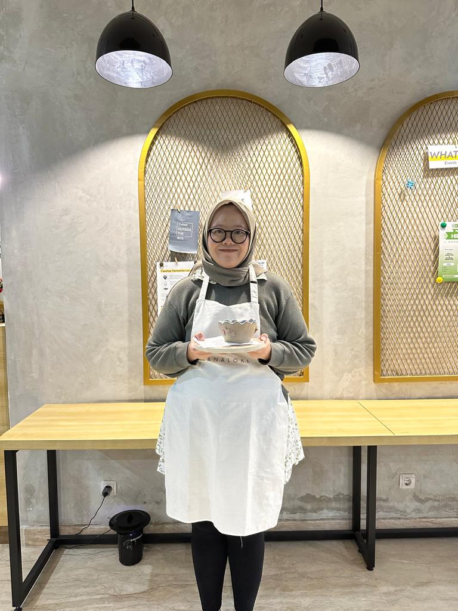

Adi Novitarini PutriContact: adinovitarini [at] gmail [dot] com Google Scholar | GitHub | LinkedIn | ORCID | ResearchGate |
 |
{kind=link}
Short Bio
I am a PhD student at the Control and Computer System Research Group, School of Electrical Engineering, Institut Teknologi Bandung, Indonesia since 2022. I received my master's degree in Electrical Engineering from Institut Teknologi Bandung and my bachelor's degree from Institut Teknologi Sepuluh Nopember.
Research Profile
My major research interests lie in control system and reinforcement learning.
Publications
-
Output Feedback Control for Deterministic Unknown Dynamics Discrete-Time System using Deep Recurrent Q-Networks
A. N. Putri, E. Hidayat, D. Mahayana and C. Machbub
IEEE Access [Paper][Code] -
Data Driven Linear Quadratic Gaussian Control Design
A. N. Putri, C. Machbub, D. Mahayana and E. Hidayat
IEEE Access [Paper][Code] -
Modeling a Single Camera System based on Predicted Bounding Box and Pan-Tilt Angles
A. N. Putri, E. Hidayat, D. Mahayana and C. Machbub
2023 IEEE 12th International Conference on System Engineering and Technology (ICSET), Shah Alam, Malaysia [Paper][Code] -
Linear Quadratic Gaussian using Kalman Network and Reinforcement Learning for Discrete-Time System
A. N. Putri, E. Hidayat, D. Mahayana and C. Machbub
2022 IEEE 12th International Conference on System Engineering and Technology (ICSET), Bandung, Indonesia [Paper][Code] -
Combination of Elman Neural Network and Kalman Network for Modeling of Batch Distillation Process
A. N. Putri, E. Hidayat, D. Mahayana and C. Machbub
2022 13th Asian Control Conference (ASCC), Jeju, South Korea [Paper][Code] -
NARX Neural Network Modeling of Batch Distillation Process
A. N. Putri, E. Hidayat, D. Mahayana and C. Machbub
2021 IEEE 11th International Conference on System Engineering and Technology (ICSET), Shah Alam, Malaysia [Paper][Code]
2023
2022
2021
Teaching
-
EL4123 Digital Control Systems(2023)
Undergraduate’s level course at the Department of Electrical Engineering, Institut Teknologi Bandung [link]
Examiner and teaching assistant
-
EL3015 Control Systems(2022)
Undergraduate’s level course at the Department of Electrical Engineering, Institut Teknologi Bandung
[link]
Examiner and teaching assistant
-
EL4113 Instrumentation Systems Laboratory (2023)
Undergraduate’s level practical course at the Deparment of Electrical Engineering, Institut Teknologi Bandung
Assistant coordinator. Coordinate at least two student assistants per semester -
EL3215 Control Systems Laboratory (2023)
Undergraduate’s level practical course at the Deparment of Electrical Engineering, Institut Teknologi Bandung
Assistant coordinator. Coordinate at least eight student assistants per semester
Granted Projects
-
Path Planning for Autonomous Forklift
Role: Research assistant. PI : Dr. Pranoto Hidaya Rusmin -
Model-free Reinforcement Learning (RL) for Optimal Control
Role: Research assistant. PI : Prof. Carmadi Machbub -
Optimization Object Detection System
Role: Reseacrh assistant . PI : Prof. Carmadi Machbub -
Implementation Reinforcement Learning for Process Control
Roles: Research assistant. PI : Prof. Carmadi Machbub -
Fault Detection and Fault Tolerant Control in Industrial Process
Research, Community Service and Innovation (PPMI), Institut Teknologi Bandung
Roles: Research assistant. PI : Egi Hidayat, PhD.
-
Autonomous Forklift
PT. Charoend Pokhpand Indonesia
Role: Research assistant. PI : Dr. Pranoto Hidaya Rusmin
2024
2023
2022
2021
Awards
- 2022: Ganesha Talent Assistanship
- 2015: Indocement Scholarship
Academic Services
-
Review for journals
IEEE Control Systems Letters
Master Thesis
-
Pemodelan dan Perancangan Kendali Optimal Sistem Kolom Distilasi Tipe Batch dengan Pendekatan Penjejakan Kuadratis Linier
Adi Novitarini Putri, Master Thesis, School of Electrical Engineering and Informatics, Institut Teknologi Bandung, September 2021 [link]
(cum laude)
Invited Talks
-
IEEE Education Week : Graduate Student Talk
Data-Driven Linear Quadratic Gaussian Control System Design
April 2023, IEEE Indonesia Section